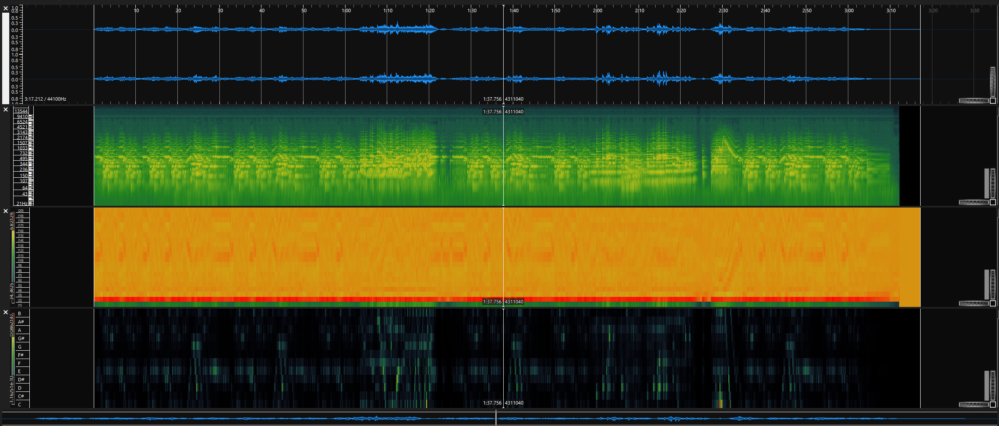
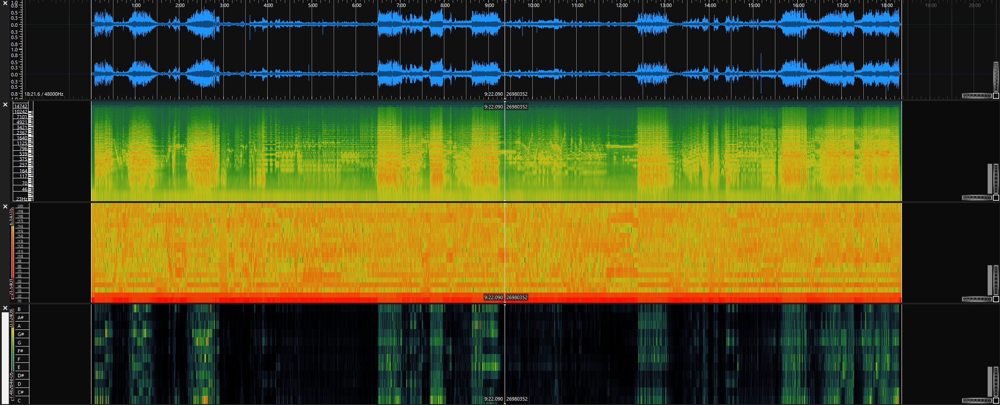
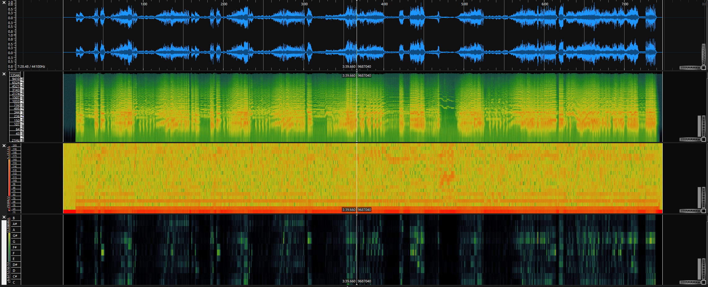
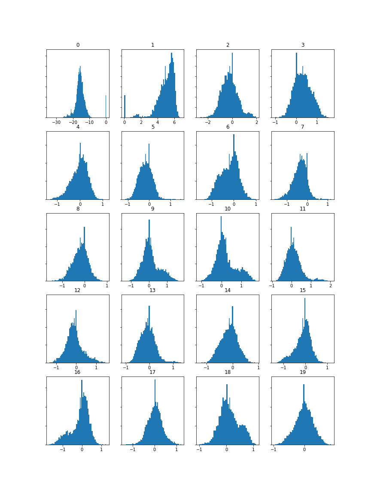
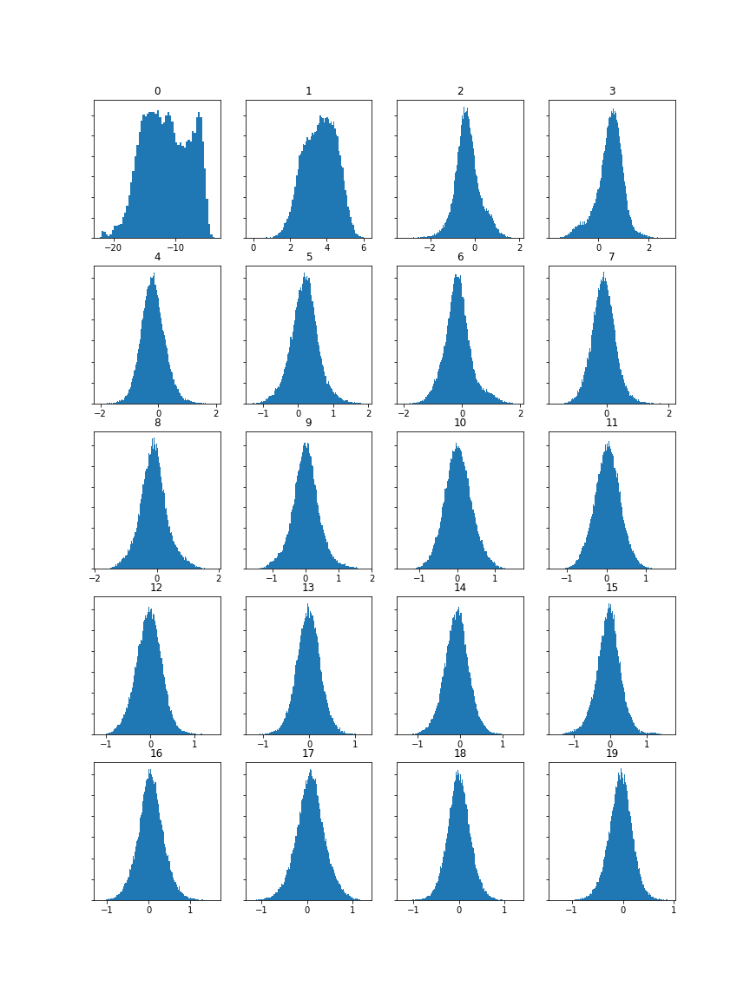
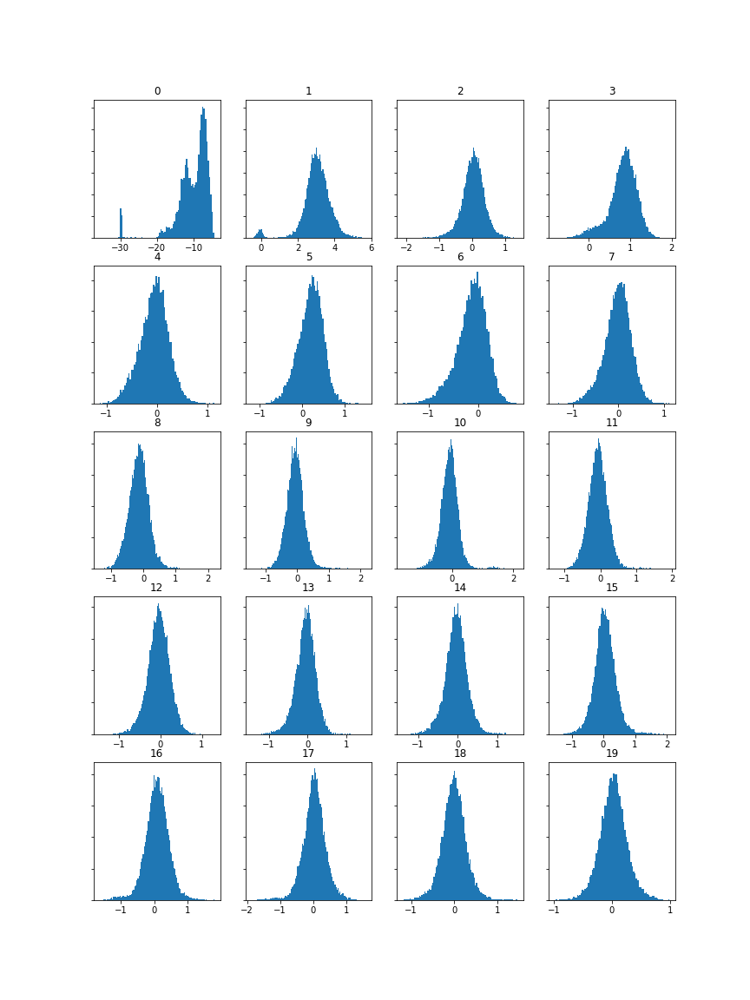

Task 1 - Extract Features
For this task I will be using the same 3 audio files as last week for simplicity and consistency.
Fur Elise
Fantasia
5th Symphony
Task 2 - Computer and Visualize Features with Histograms
Histograms
From these histograms we can see a very clear difference between the first set, Fur Elise, and the other two. This will be because Fur Elise is not only a piano piece, but a piano piece that sticks to a consistent mid-low range. This means that compared to the two orchestra pieces, the timbre of the sound is much more consistent and tightly grouped which is reflected in my Mel Frequency Cepstral Coefficient histograms.